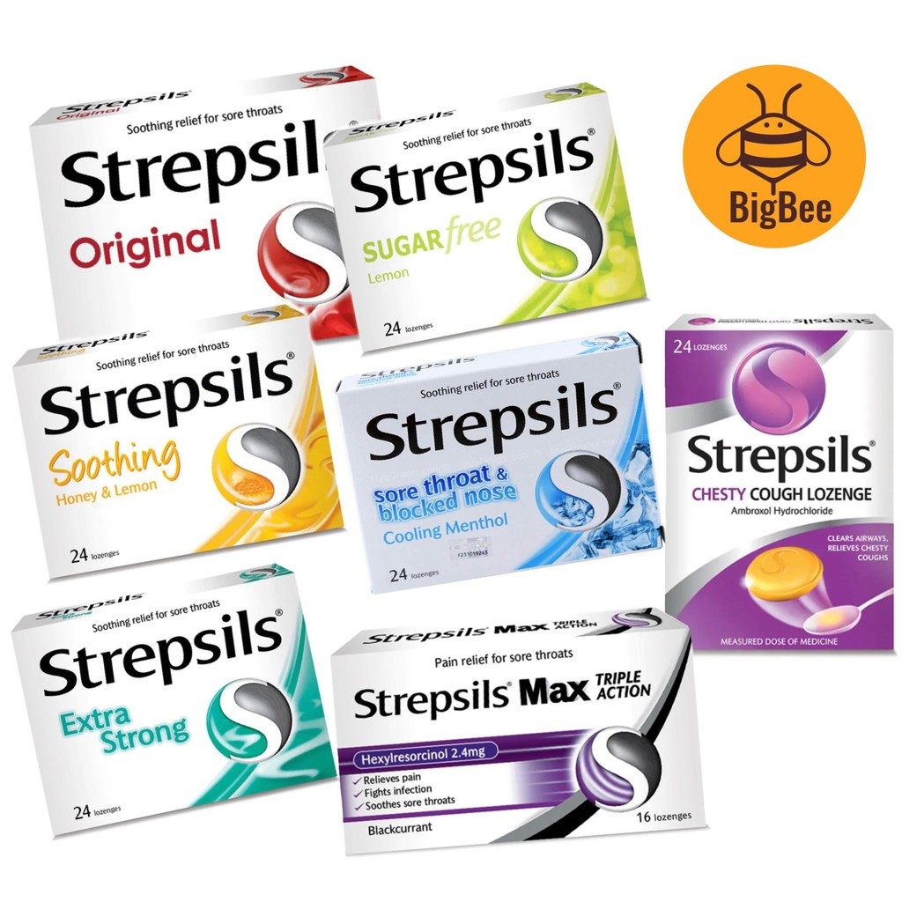

Medicine Guide For Sore Throats

BACTIDOL
Description
💊 Purpose:• Relieves sore throat and bacterial infections.
• Provides antibacterial and antifungal protection.
🔥 How It Works:
Contains hexetidine, dichlorobenzyl alcohol, amylmetacresol, or guaifenesin.
💡 Common Use:
For sore throat and oral infections.
J&J. (n.d.). Bactidol Product Information.
Guide
✅ Dosage:• Gargle: 2x daily.
• Lozenges: 1 every 2-3 hours (max: 8/day).
🚫 Usage Limit:
Do not exceed the recommended dose.
✅ Usage Tip:
Avoid eating or drinking immediately after use.

• Relieves sore throat and mouth infections.
• Soothes throat irritation and reduces discomfort.
🔥 How It Works:
Contains dichlorobenzyl alcohol and amylmetacresol, which have antiseptic properties that kill bacteria and viruses.
💡 Common Use:
For sore throat and minor mouth infections.
Reckitt Benckiser. (n.d.). Strepsils Product Information.
• Adults and children (6+ years): 1 lozenge every 2-3 hours.
• Maximum: 8 lozenges in 24 hours.
🚫 Usage Limit:
Do not use for more than 3 consecutive days without consulting a doctor.
✅ Usage Tip:
Allow the lozenge to dissolve slowly in the mouth.
STREPSILS
Description
💊 Purpose:• Relieves sore throat and mouth infections.
• Soothes throat irritation and reduces discomfort.
🔥 How It Works:
Contains dichlorobenzyl alcohol and amylmetacresol, which have antiseptic properties that kill bacteria and viruses.
💡 Common Use:
For sore throat and minor mouth infections.
Reckitt Benckiser. (n.d.). Strepsils Product Information.
Guide
✅ Dosage:• Adults and children (6+ years): 1 lozenge every 2-3 hours.
• Maximum: 8 lozenges in 24 hours.
🚫 Usage Limit:
Do not use for more than 3 consecutive days without consulting a doctor.
✅ Usage Tip:
Allow the lozenge to dissolve slowly in the mouth.

BETADINE
Description
💊 Purpose:• Treats and prevents infection in wounds and mouth sores.
• Reduces bacteria, viruses, and fungi.
🔥 How It Works:
Contains povidone-iodine, a broad-spectrum antiseptic that kills pathogens.
💡 Common Use:
For oral and topical disinfection.
Mundipharma. (n.d.). Betadine Antiseptic Product Information.
Guide
✅ Dosage:• Mouthwash: Gargle with 10 mL for 30 seconds, 2-4 times daily.
• Topical: Apply to the affected area 1-2 times daily.
🚫 Usage Limit:
Do not use for more than 7 consecutive days without medical advice.
✅ Usage Tip:
Do not swallow the mouthwash.

DEQUADIAN
Description
💊 Purpose:• Relieves sore throat and mouth infections.
• Reduces pain and inflammation.
🔥 How It Works:
Contains dequalinium chloride, an antiseptic that kills bacteria and fungi.
💡 Common Use:
For sore throat, mouth ulcers, and gingivitis.
Dequadian. (n.d.). Dequalinium Chloride Product Information.
Guide
✅ Dosage:• Adults and children (10+ years): 1 lozenge every 2-3 hours.
• Maximum: 8 lozenges in 24 hours.
🚫 Usage Limit:
Do not use for more than 7 consecutive days.
✅ Usage Tip:
Let the lozenge dissolve slowly in the mouth.

DIFFLAM
Description
💊 Purpose:• Relieves sore throat, mouth ulcers, and oral pain.
• Reduces inflammation and discomfort.
🔥 How It Works:
Contains benzydamine hydrochloride, a non-steroidal anti-inflammatory drug (NSAID) that reduces pain and swelling.
💡 Common Use:
For sore throat, oral inflammation, and post-dental surgery pain.
iNova Pharmaceuticals. (n.d.). Difflam Product Information.
Guide
✅ Dosage:• Spray: 4-8 sprays every 1.5-3 hours.
• Lozenges: 1 every 1.5-3 hours.
• Maximum: 12 lozenges in 24 hours.
🚫 Usage Limit:
Do not use for more than 7 days without medical advice.
✅ Usage Tip:
Avoid eating or drinking immediately after use.